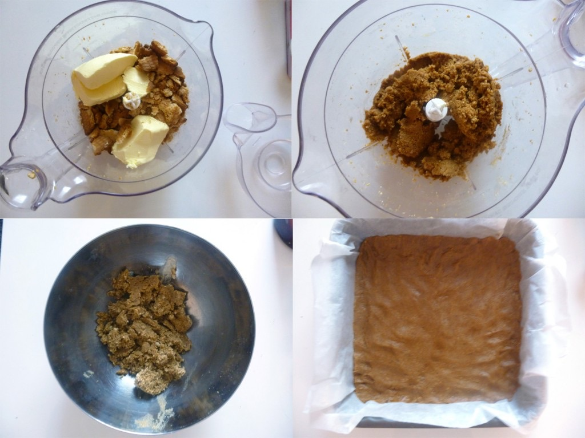
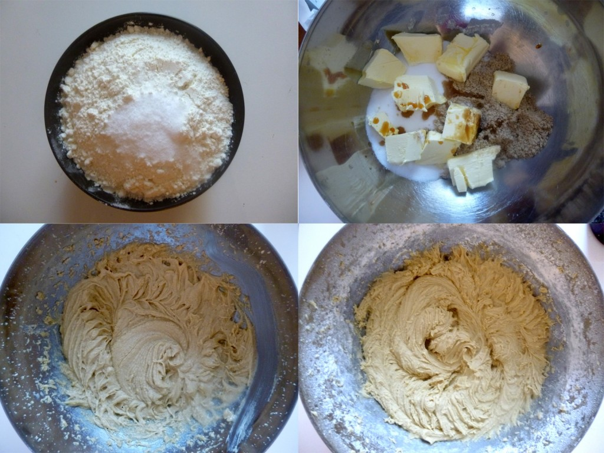
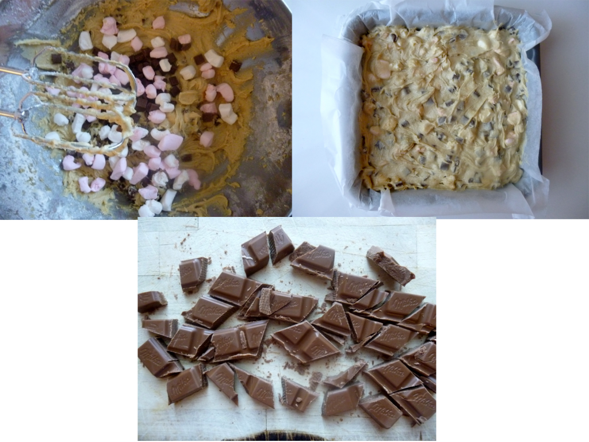
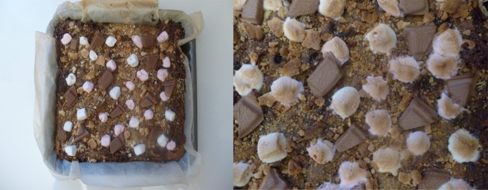
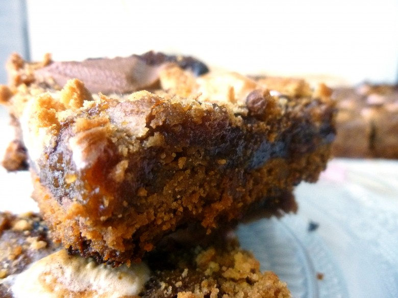
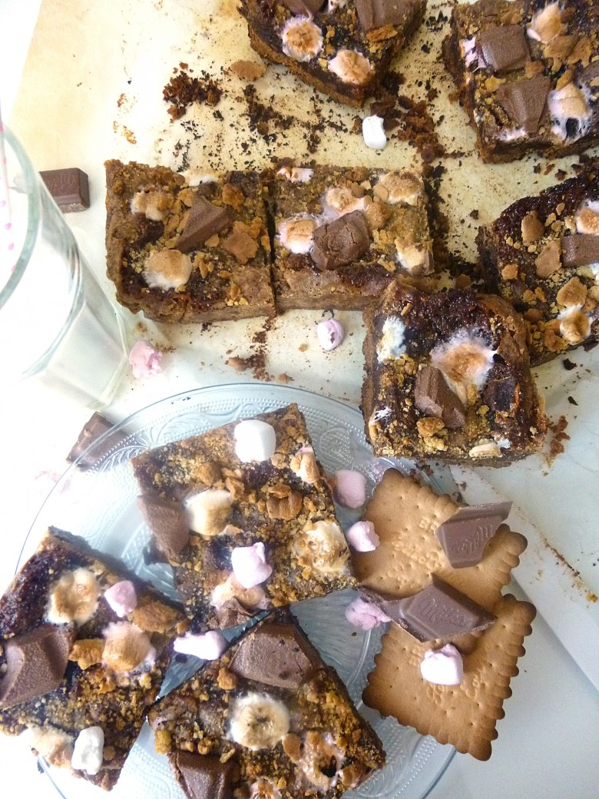

Smores bar

Les smores bar (normalement cela s’écrit s’mores bar) est un dessert auquel je ne peux clairement pas résister !!
J’ai râté la journée nationale des smores qui normalement est le 10 août !^^
Mais d’abord les smores c’est quoi ???
Il s’agit d’un dessert « ultra famous » aux États-Unis et au Canada.. Autour d’un feu de camp, les marshmallows sont grillés et dévorés avec un carré de chocolat entre deux biscuits Graham (genre de biscuit Lu chez nous), c’est une tradition girlscoot :).
Vous l’aurez compris c’est un dessert ultra gourmand alors ne soyez pas étonnés si je vous dis que smores n’est enfaite que la contraction de « some more » qui veut dire qu’au final il est totalement impossible de s’en contenter d’un seul 😀
Ma recette est un smore bar. Il s’agit de smores sous la forme d’un gâteau « sooo tasty » 😉
Je vous laisse découvrir..
Ingrédients
- Beurre mou - 120 g
- Biscuits genre petit beurre - 190 g
- Vergoise blonde - 100g
- Sucre semoule - 150g
- Oeuf - 1
- Beurre mou - 110 g
- Extrait de vanille - 1càc
- Bicarbonate de sodium - 1càc
- Farine - 160g
- Marschmallows - 1 grosse poignée
- Chunks - 170 g
- sel - 1 pincée
- Carrés de chocolat - 10-15
- Marschmallows
- Biscuit genre petit beurre - 1 ou 2
Instructions
- Recouvrir votre plat de papier sulfurisé
- Casser grossièrement les biscuits et le mettre dans votre mixeur
- Ajouter le beurre mou
- Mixer (si vous n'avez pas de mixeur broyer le tout afin d'obtenir un mélange homogène)
- Recouvrir la base du plat du mélange obtenu
- Placer au frais pendant le reste de la recette
- Dans un bol mélanger la farine, le sel et le bicarbonate. Réserver
- Dans un récipient battre le beurre avec la vergeoise, le sucre et l'extrait de vanille
- Ajouter peu à peu le mélange farine-bicarbonate-sel
- Après avoir incorporer toute la farine arrêter de battre
- Je n'ai pas pu trouver de minis marshmallows :'( ... (j'ai l'impression qu'ils n'en font plus alors si vous êtes dans le même cas que moi : couper des "grands marshmallows" en petits morceaux)
- Incorporer les chunks (ou pépites de chocolats) et les "minis marshmallows" à la pâte à cookies (réserver quelques minis marshmallows pour la déco finale)
- Remuer
- Sortir le plat du frigo et étaler la pâte à cookies de façon uniforme
- Découper des carrés de chocolats et placez-les au frais
- Enfourner le smores à 170° pendant 40min (surveillez selon votre four)
- Sortir le gâteau 5 minutes avant la fin de la cuisson, émietter un (ou deux^^) petit brun (ou petit beurre) sur la surface du gâteau et disposer des carrés de chocolat un peu n'importe où, ainsi que des "minis marshmallows" (faites comme bon vous semble c'est votre déco après tout!)
- Ré-enfourner et surveiller bien la cuisson car le but est que les carrés de chocolat ne fondent pas et que les marshmallows prennent une jolie couleur dorée!
- Une fois le smores sorti du four il va falloir atttteeeeeeeennnnnddddre looooooooongtemps avant de le manger car il doit êtretotalement froid et s’être bien durci pour être coupé et mangé!
- Une fois le smores refroidi coupez le en carrés et vous pouvez enfin en manger !






Les tips de la communauté
Barres très gourmandes et addictives qui font une vraie tuerie. Recette décadente sans effet négatif sur la ligne. L'étape d'incorporation de l'œuf a été clarifiée.
Astuces
- À consommer avec modération (très riche en gourmandise)
- Parfait pour ceux qui veulent se faire plaisir
- Résultat spectaculaire garanti
- L'œuf doit être incorporé avant la farine
Variantes suggérées
- Personnalisation possible des couches de garniture
Ajustements signalés
- L'œuf doit être incorporé avant le mélange avec la farine